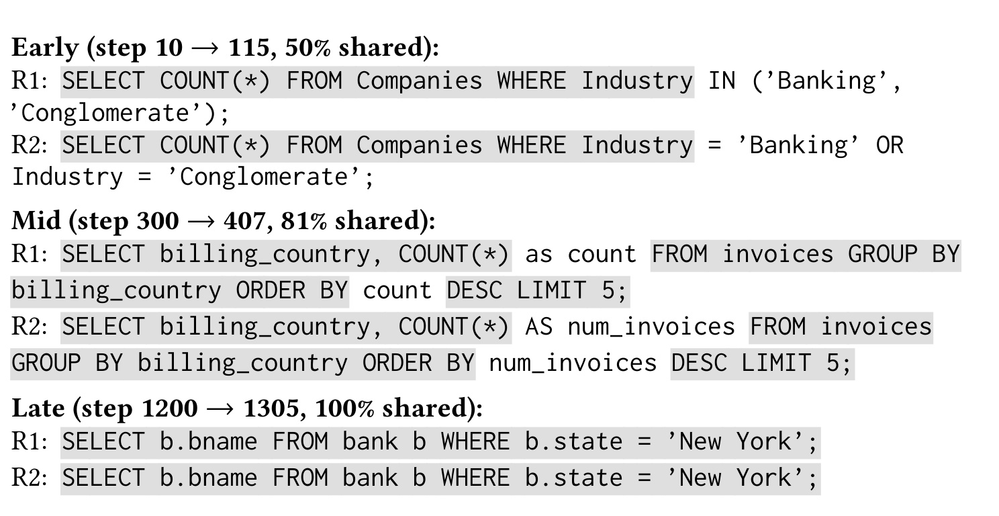
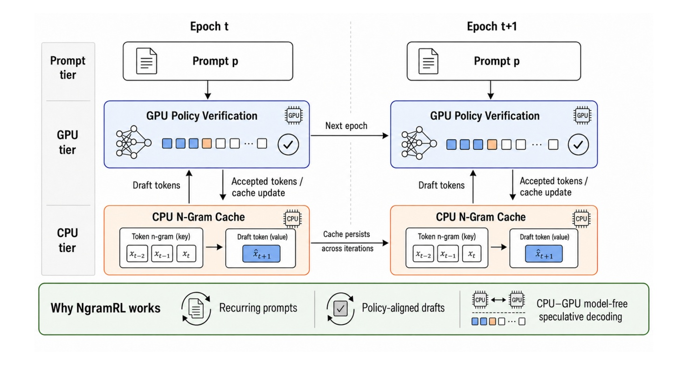
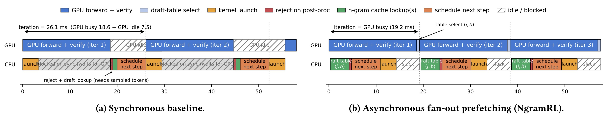
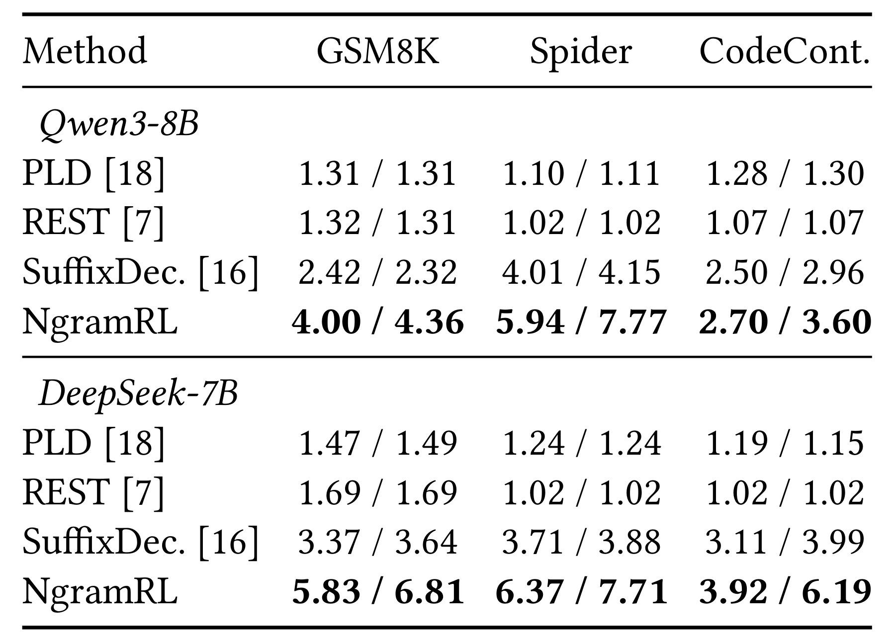
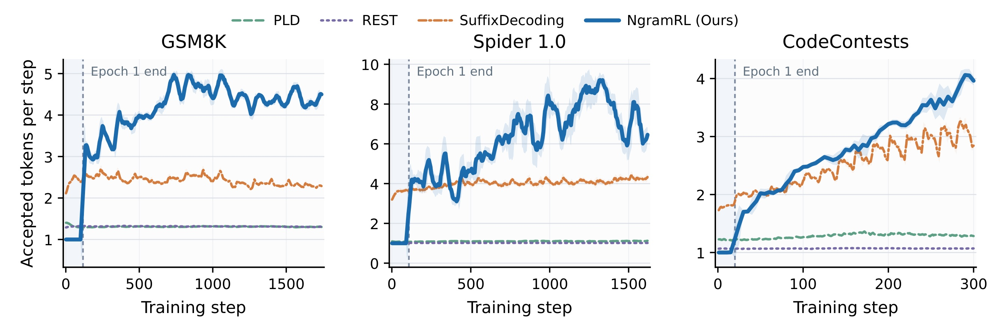
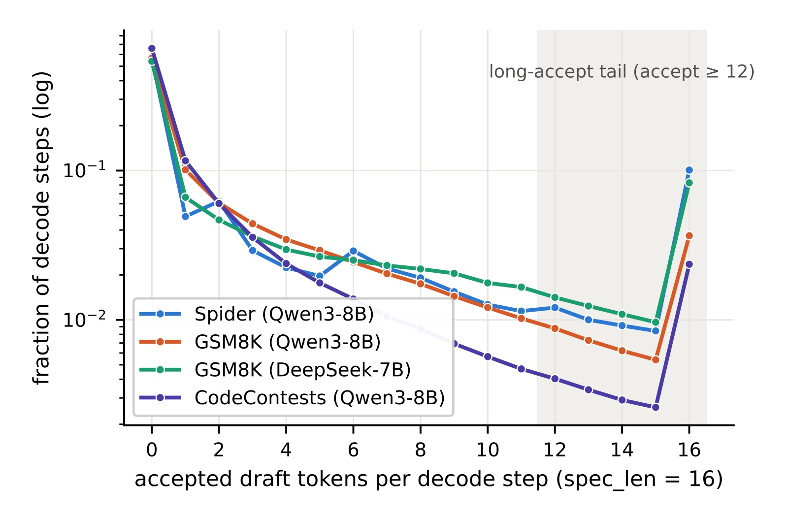
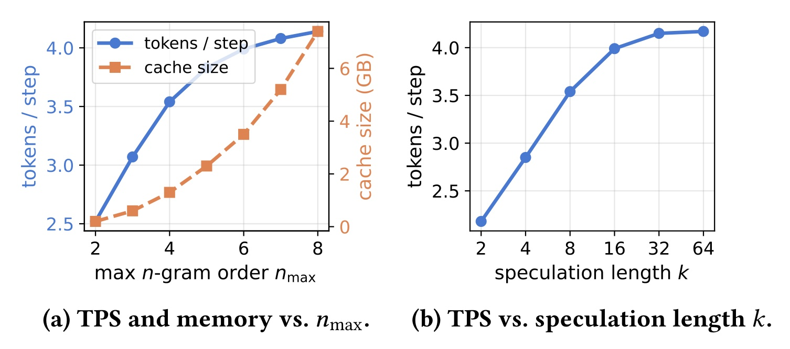
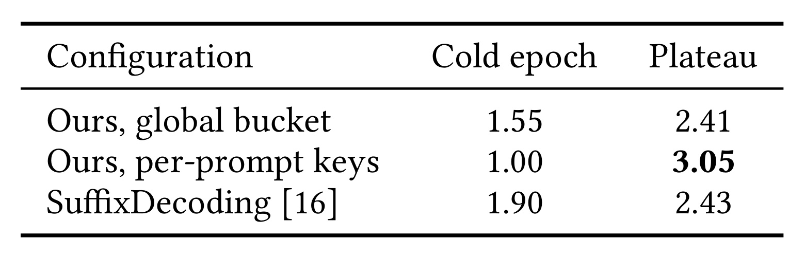
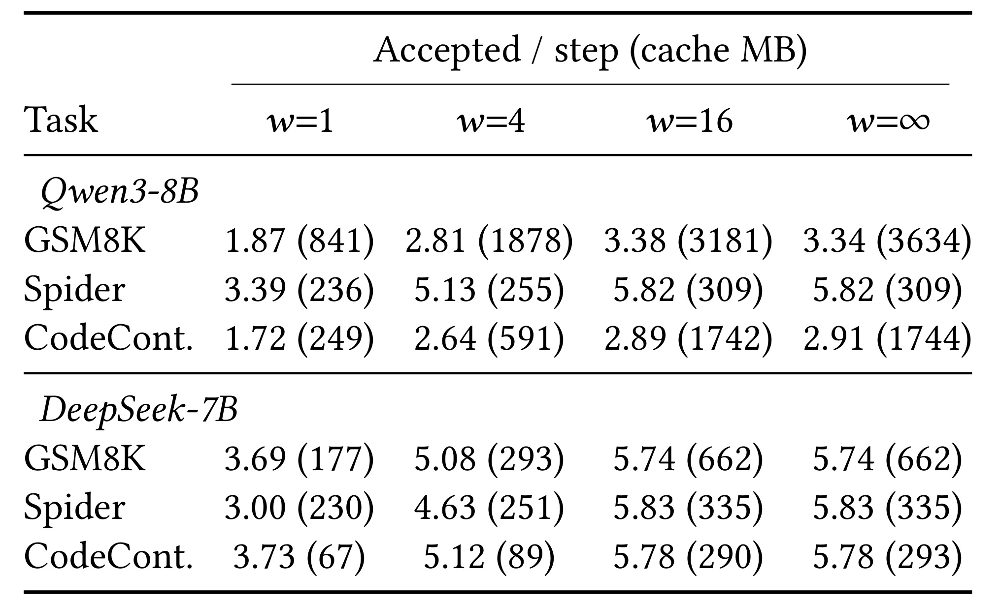
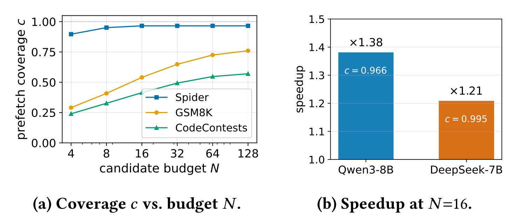

NgramRL：把同一问题的历史轨迹变成后训练草稿
NgramRL 由加州大学圣迭戈分校的 Nilesh Prasad Pandey、Jangseon Park 等研究者提出，合作机构包括西弗吉尼亚大学，研究对象是强化学习后训练中的 rollout 生成效率。论文于 2026 年 10 月 23 日首次公开，论文入口，本笔记核验日期为 2026 年 10 月 27 日。未核验到本文独立代码或项目链接。它把同一提示词过去产生的回答建成主机端缓存，再用目标策略精确验证草稿，并以结果分支预取隐藏主机往返。
强化学习后训练的大部分时间可能消耗在逐令牌生成轨迹上，但额外草稿模型会占用紧张的显存，并可能随策略更新而失配。同一问题的近期轨迹本身就是不断更新的草稿来源；要真正利用它，还必须消除主机缓存与设备验证之间串行往返造成的等待。
1. 背景和问题
1.1 为什么强化学习生成阶段有独特的可复用性
在分组相对策略优化中，一次训练更新不是直接读取固定答案计算损失，而是先让当前策略为每个问题采样一组回答，然后计算奖励和组内相对优势，最后进行策略更新。对于长推理或代码任务，这意味着梯度计算开始之前就已经生成了大量令牌。论文引用的背景资料指出，生成阶段在某些训练配置中可超过单步时间的七成。这一比例不是本文对所有平台给出的普遍测量，而是说明作者为何把优化目标放在生成阶段。只加速优化器或者奖励计算，难以触及这类配置里的最大成本来源。
通常的自回归生成每次依赖前一个令牌，下一步必须等前一步完成。推测解码则由便宜的草稿器先提出多个令牌，目标模型一次前向并行检查这些候选，尽量用一次昂贵计算提交多个令牌。如果验证过程采用正确的接受与拒绝修正，最后提交的序列仍服从目标策略的采样分布。这里可被优化的是执行路径和验证批次，而不是训练目标。因此论文首先是一项解码系统设计，不是新的奖励函数、新的分组优势估计，也没有声称通过复用回答直接提升推理正确率。
后训练与固定模型的在线推理存在三点不同。首先，策略参数、梯度、优化器状态与键值缓存同时争用设备内存，独立草稿网络或额外预测头会增加长期驻留资源。其次，训练策略不断变化，针对旧快照训练好的草稿器可能越来越偏离当前分布，接受长度随之下降。最后，训练数据中的问题会跨步骤、跨轮次再次出现，而每次更新通常只是渐进调整。这样一来，同一问题的新回答和旧回答之间可能保留大量完全相同的片段。这种重复不是当前输入提示词内部的重复，也不一定是不同问题共享的通用套话。
这第三点解释了本文为什么单独维护提示词缓存。假设数据库问题不变，表名、列名、连接关系和答案形式就会约束后续输出；同一问题再次采样时，即使表达或别名有所变化，也可能保留长段相同词元。数学题的某些推导片段同样可能反复出现，而编程题又会同时包含问题专属逻辑与跨题共享代码模板。缓存到底应该按问题隔离还是全局共享，取决于哪种重复占主导，所以后面必须用消融实验检验，不能仅凭“输出有规律”就断言任何任务都会受益。

Figure 2 给出的三个案例来自同一问题间隔一个训练轮次的两次回答。早期示例把行业条件写成成员集合或两个析取条件，结构相近但词元并非完全一致，共享比例为百分之五十；中期聚合查询保留国家列、分组、排序与限制行数等大段结构，只在别名及大小写等局部改变，共享比例上升到百分之八十一；晚期例子中的查询完全相同。截图中的灰色高亮标记原文实际共享片段，不能把语义等价但字符串不同的表达也当作可直接复制的词元。它支持的是“存在可被逐词元验证利用的局部重复”，不是证明所有问题都会逐渐收敛到唯一答案，也不是说明晚期模型已经答对。三个示例是现象展示，不能替代整套任务的分布统计；论文随后用接受长度曲线和缓存结构消融检验它是否能转成系统收益。还需要注意，同题重复可能保留错误推导，缓存本身没有判断真假的能力，质量仍由当前目标策略和原有训练奖励机制决定。
1.2 旧草稿器的证据范围与新的主机瓶颈
提示词查找解码主要从当前上下文里匹配已有片段。当回答是一段提示词没有出现过的推理或查询，它可以借用的内容很少。静态检索草稿器虽然拥有更大外部语料，但不自动记录当前策略刚产生的答案。全局后缀树可以跨输出复用文本，已经是更接近的比较对象；不过，如果不把问题身份放进索引，同样的短上下文可能命中来自其他问题的延续。同题历史与跨题模板之间的竞争由此成为一个具体设计选择，而非单纯比较查找表与后缀树谁更先进。
把历史轨迹存在主机内存，可以避免草稿状态长期占据显存，但这并不意味着草稿器没有资源成本。大量问题、多个轮次和多个阶数的词元上下文会消耗主机内存，查找也依赖主机处理能力。更隐蔽的是，下一步查找上下文取决于这一轮验证到底接受了多长前缀，以及目标模型最后发出了什么令牌。若先等设备把结果传回主机，主机处理拒绝、查询缓存、安排下一批并启动内核，设备会在这一串工作完成前闲置。作者的分析指出，单纯缓存查找本身在这个空档中只占很小部分，同步与调度更重要。
因此 NgramRL 实际解决了两个层次的问题。第一层是从哪里获得贴近当前策略的廉价草稿：答案是同一提示词最近的策略轨迹。第二层是有了好草稿之后如何避免新的串行瓶颈：答案是提前为多个可能的验证结果准备下一步草稿，等实际结果出现后直接选取。只介绍缓存而忽略预取，会把一篇主机与设备协同论文误读成普通的字典检索；只介绍并行预取而忽略提示词条件，又解释不了为什么结构化任务能用较小候选预算覆盖大部分真实结果。
从研究意义上看，这项工作与大模型方向直接相关，也对依赖生成式策略的推荐、搜索或工具调用系统有参考价值。但本文实验不是推荐排序实验，没有点击率、归一化折损累计增益或在线用户收益，不能把语言模型生成吞吐提升迁移成推荐业务收益。更合适的联系是：当某种训练反复访问同一条件输入，而且输出中存在较长可复制片段，就值得测量这种条件化时间局部性；条件不成立时，缓存冷启动和维护成本可能占据主要部分。
评价这类系统还必须把三个尺度分开。每次目标前向提交多少令牌，是与硬件关系较弱的算法代理指标；单位时间生成多少令牌，是依赖主机、设备、批次和内核实现的运行时指标；整次强化学习训练耗时，则还包含奖励计算、策略更新、数据加载等阶段。后面的表格主要测量第一个尺度，预取实验测量第二个尺度，论文没有给出足以直接计算第三个尺度的完整训练时长对照。保留这条证据边界，才能正确理解结果中的大倍率与小倍率为什么同时存在。
2. 方法
2.1 逐提示词缓存与跨轮自更新
NgramRL 的输入是提示词以及它在最近训练步骤中产生的一组轨迹。每个提示词拥有独立的多阶词元查找表，表中把长度为阶数减一的上下文映射到观察过的后继词元和出现频率。训练步骤完成后，从该提示词的新轨迹抽取指定阶数范围内的片段，累加对应后继的计数，并记录最近访问训练步。Algorithm 1 用增量插入和时间戳清退表达这个过程。长久没有再次出现的上下文与后继条目会被驱逐，从而把主机内存和过时策略痕迹限制在近期范围内。

Figure 1 的上层是重复出现的提示词，中层是当前设备上的策略模型，下层是主机词元缓存。左侧轮次产生的已接受令牌会更新缓存，缓存再为后续生成提供草稿；跨到下一轮后，提示词依旧可以利用先前积累的片段，但验证者已经是训练后的新策略。这一结构中最重要的是缓存内容来自策略自身近期输出，验证仍由当前策略执行。缓存可以随训练自然更新，而不需要再训练一个草稿网络。它也解释了为什么没有独立的草稿梯度或草稿损失：缓存更新是离散计数与驱逐操作，不参与策略优化的反向传播。图中的主机层不是额外模型副本，箭头也不是让缓存绕过策略直接决定最终答案。缓存提出的候选是否被采纳，必须经过下一模块的验证。跨轮持久化带来复用，提示词隔离减少来自无关问题的后继干扰，时间窗则控制旧轨迹继续影响候选排序的期限。三者共同工作，任何一个单独拿掉，都可能改变接受长度。还要看到缓存并不保证跟踪绝对实时的分布：策略发生快速漂移时，最近历史仍可能不合适，系统依靠精确验证保持正确性，依靠较短历史减少效率损失。这是“无需重新训练”与“永远不会失配”之间必须保留的区别。
正文把保留窗口写成最近若干训练步骤，Algorithm 1 的驱逐条件比较当前训练步与条目的最后访问步；实验 Table 3 则明确把小写窗口定义为每个提示词最近出现的次数。提示词并非每步都被访问，因此这两个计量单位不能直接互换，更不能把消融中的四次出现说成最近四个全局训练步。另一处因果预算分配也使用近期步数统计，它服务于结果分支概率估计，与缓存历史保留不是同一个机制。论文没有给出足够实现细节把三种时间口径统一成一个配置，应在复现时分别确认。
2.2 草稿生成与精确验证
生成时，系统用当前上下文查询该提示词缓存中的最长匹配片段，取保存的后继作为草稿，连续构造最多指定长度的候选。匹配不到的地方退回普通解码。频率信息用于候选选择及后续预取排序，但草稿频率不是当前策略概率，不能以“历史最常见”直接替代目标模型采样。论文使用标准推测采样校正，接受率为：
符号解释：这里的上下文记为 $h$，避免与后文覆盖率混淆；$x$ 是提出的词元，$\pi_\theta$ 是当前策略的条件分布，$q$ 是缓存草稿的提案分布。公式对应原文式一。发生拒绝时，从目标分布减去草稿分布后的正残差归一化采样；接受前缀及随后目标模型发出的继续词元一起提交。提案分布与目标分布越接近，接受越容易，但正确性依赖验证与残差修正，不依赖缓存总是猜对。缓存只决定多少候选能一起被确认，不应改变最终边缘采样分布。
这一点把系统优化与训练语义连接起来。相同目标分布意味着轨迹、奖励、优势和梯度在分布上保持一致，而不是保证两次运行逐字符输出完全相同或随机数消耗顺序完全一致。原文没有展开缓存提案分布的全部实现表示，也没有逐一报告最终奖励曲线，因此精确性主要来自所采用的标准校正机制，不能用表一的接受长度结果反过来证明实现绝对无误。工程接入位置是 verl 的 vLLM rollout worker，奖励模型、优化器和策略结构无需改变；缓存属于生成阶段基础设施，在不重复访问提示词的普通服务场景中则没有同等依据保证收益。
2.3 结果分支预取与预算分配
下一次草稿依赖两个尚未最终确定的变量：本轮接受长度，以及目标模型在接受前缀后发出的继续词元。前者有从零到草稿长度的有限个分支，后者来自整个词表，可能是拒绝后的重采样词元，也可能是完整接受后多得到的词元。只预测接受长度不足以确定下一上下文，丢掉继续词元又会改变目标采样。作者于是对“接受长度与继续词元”的组合准备草稿表，设备验证结束后只需按实际结果做常数时间键查询。

Figure 3 左侧把串行依赖画得很直接：设备前向完成，主机等待同步，随后执行拒绝后处理、草稿查询和调度，才启动下一次设备计算。示例迭代共二十六点一毫秒，其中设备忙碌十八点六毫秒，空闲七点五毫秒，约占二十九个百分点。右侧把候选草稿表的准备以及下一步调度放到当前设备计算期间，实际验证结果出来后选择表项，于是示例迭代缩到十九点二毫秒。两个面板设备忙碌时间略有不同，不能用左图的忙碌时间直接替换右图总时长，也不能把这一张机制时间线当成所有任务的统一运行时间。它说明被隐藏的是验证结果依赖的整条主机工作链，而不是仅仅把字典查找优化几个微秒。候选草稿表需要在当前前向返回前准备并传到设备，预取本身也有成本；预算过大就可能无法被设备计算覆盖。若真实组合已被预取，选择的草稿与顺序执行时相同；若没有覆盖，则该请求走正常顺序查询。无论命中与否，目标已发出的继续词元都不被修改，这才使预取可以作为执行层优化而不触碰训练分布。
每个接受长度分支得到若干个继续词元候选，候选来自该提示词缓存的频率排序。总预算有限，因此不能平均对所有分支无差别扩张。作者用因果尾随窗口内的历史接受长度频率与分支覆盖曲线分配预算，对应原文式二：
符号解释：其中 $k$ 是草稿最大长度，$j$ 是接受长度，$f_j$ 是该分支获得的候选数，$N$ 是总候选预算；$\widehat P(j)$ 来自过去的接受长度直方图，$\widehat c_j$ 表示真实继续词元排进前若干候选的概率。系统按新增一个候选带来的边际覆盖增益贪心分配。因果统计不借用未来验证结果。完整接受分支尤其有利：继续词元往往就是缓存轨迹中的下一个词元，最高频候选约九成时候足够，所以小预算也能覆盖较确定的任务。
覆盖率如何变成墙钟加速由原文式三刻画：
符号解释：这里 $c$ 是组合结果的覆盖概率，两个时间分别是设备忙碌与未重叠主机链耗时。命中时隐藏主机链，未命中时仍付出它，因此上限取决于主机相对设备的比例。更大模型或批次增加设备时间，可能更容易容纳预取，但可隐藏主机占比反而更低，最终相对收益未必更高。该模型还要求预取链自身能放入设备计算窗口，论文指出预算约六十四以后成本已接近被隐藏的主机时间。因此不能凭覆盖率增加就无限增加候选数。
3. 实验结果
3.1 主结果与统计口径
训练实验使用 verl 和 vLLM，在两张八十吉字节 A100 上运行分组相对策略优化；每步六十四个提示词，每题采样五个回答，共十五轮，比较方法使用相同模型配置和默认超参数。模型为 Qwen3-8B 与 DeepSeek-LLM-7B，任务为数学推理 GSM8K、文本转查询 Spider 1.0 和编程 CodeContests。比较对象是当前上下文提示查找、静态检索 REST、最近一万回答构成全局后缀树的 SuffixDecoding，草稿预算统一为十六。

Table 1 的 TPS 必须按论文定义读成每次解码步、每次目标模型前向提交的令牌数，它等于平均接受草稿长度再加一，不是每秒令牌数。每个单元格斜杠前是完整训练过程的均值，斜杠后是最后百分之三十步骤的均值；后者被作者作为策略与缓存相对稳定阶段，不能拿来冒充完整训练平均。Qwen 在数学、查询、代码三个任务上的 NgramRL 数值依次为四点零零与四点三六、五点九四与七点七七、二点七零与三点六零；对应后缀树为二点四二与二点三二、四点零一与四点一五、二点五零与二点九六。DeepSeek 的三组结果依次为五点八三与六点八一、六点三七与七点七一、三点九二与六点一九。全程均值已经计入第一轮冷缓存，所有任务仍领先，但领先幅度并不相同。查询任务的收益较强，因为同题结构重复明显；代码任务中跨题共用模板可帮助全局缓存，因此 NgramRL 在 Qwen 全程比较中只略高于后缀树。论文摘要给出的稳定阶段三点六到七点七七，以及相对后缀树最多一点九九倍、相对提示查找最多七倍，均属于前向提交量口径。它们不能直接解释成吞吐倍率，更不能解释成强化学习训练总时长等比例缩短。表格没有误差条或多个随机种子的统计检验，也没有在同表给出最终正确率和奖励，所以比较范围是论文报告的这些训练轨迹与解码代理指标。此外，稳定阶段是按训练步骤截取的最后三成，并非按输出词元数加权的尾段，也不是根据每个任务最优接受长度挑出的峰值。读表时应先在同一模型和任务列内比较，再看全程与尾段的差异；跨任务数字高低还受到输出形式和重复结构影响，不能用查询任务的最高数值代表整个训练任务集合。
3.2 训练动态与长接受尾部

Figure 4 给出 Qwen 在三个任务中的全过程，而虚线标记首轮结束。提示词尚未再次出现时，提示词专属缓存基本没有可用历史，NgramRL 曲线在接近普通解码的基线起步。这里“接受长度为零”与“提交量为一”并不矛盾，因为没有接受草稿时仍提交目标产生的一个词元。首轮之后曲线明显提高，说明历史积累是方法的必要条件。数学与编程总体继续增强，查询任务则在中段达到较高位置后下降。后者提醒我们，缓存由策略自身产生也不意味着永远新鲜：策略输出趋于多样或旧查询过时时，命中仍会受损。代码任务中，全局缓存早期领先，提示词专属历史积累后才反超，符合它包含跨题公共模板的性质。图的价值在于揭示收益出现的时间结构，而非只摘取末尾最好数字。对于只训练一轮、数据不复用或者频繁替换提示词的设置，必须重新估计冷启动成本；不能用十五轮训练后期的收益外推这些工作负载。

Figure 5 横轴是实际接受的草稿词元数，最大十六，纵轴为解码步占比且采用对数刻度。均值把大量短接受与少量长接受混在一起，图上十六附近的抬升表明完整片段重放并非偶然。查询任务至少接受十二个的步骤占百分之十四点一，完整接受十六个最高占百分之十点一；DeepSeek 数学、Qwen 数学和代码任务的长接受比例分别约百分之十三、六点四和三点七。作者把它解释为先前轮次解答的逐词元重放。这个结果支持使用较长草稿预算：如果最多只提出少数词元，就主动放弃了已经存在的长段相同文本。但长尾同时说明不能只用平均接受长度推断单步时延，批内不同请求接受程度可能差异很大，运行时如何处理这些差异仍然重要。图中的词元重复也不等于语义正确性的证明，它只衡量当前策略愿意继续生成与历史相同的文本，错误轨迹同样可能形成重复。
3.3 缓存结构与超参数消融

Figure 6 左图同时画出提交量和缓存大小：提高最大阶数能够给出更具体的上下文匹配，接受量上升，但六阶之后收益接近饱和，主机缓存仍继续增长，而且增长速度较快。右图把最大草稿长度作为横轴，在十六附近也出现明显拐点，继续加长到三十二或六十四只带来很小收益。作者最终统一使用六阶和十六词元预算，并报告这一选择能迁移到其他模型任务。这里必须区分两种资源变化：提高词元阶数会增加索引状态，增大草稿预算主要增加每次提出和验证的长度，论文指出后者不改变缓存本身大小。该图来自 Qwen 数学任务，不是所有工作负载都做了完整网格搜索；“能迁移”是作者在本文实验范围内的经验，而不是通用最优参数定理。尤其缓存存在主机并不代表容量免费，左图以吉字节计的增长足以影响多租户节点或大量提示词训练，应和设备显存节省一起评估。

Table 2 有意保留相近的查找实现，只把提示词键去掉，改成一个全局桶。冷启动阶段全局桶为一点五五，提示词专属版本为一点零零，后缀树为一点九零，说明跨题复用确实帮助没有历史的早期。进入平台阶段后，全局桶只有二点四一，接近后缀树的二点四三，而提示词专属版本达到三点零五。也就是说优势不能简单归因于查找表的数据结构，真正重要的是把后继选择条件化在问题身份上。作者还把后缀树缓存扩大四倍到四万回答，结果只提高到二点六五，仍不足以追上提示词键版本。这个额外检查削弱了“只是对手缓存太小”的解释，但它不是对所有缓存实现、所有压缩策略或所有调度策略的全面比较。冷启动与稳定阶段相反的排序尤其有用：提示词隔离提高相关性，同时牺牲来自其他问题的热启动信息。若要把它扩展为全局与专属混合设计，需要新的实验，本文并没有证明两者组合一定更好。

Table 3 把每个提示词保留的最近出现次数从一次、四次、十六次增加到不设上限，单元格同时报告接受量与主机缓存兆字节数。这不是正文按训练步驱逐窗口的直接数值对应。Qwen 数学任务从一次的一点八七与八百四十一兆字节，增加到四次的二点八一与一千八百七十八兆字节，再到十六次的三点三八与三千一百八十一兆字节；无限历史达到三千六百三十四兆字节，接受量反而略降到三点三四。查询任务到十六次后基本不再增长，代码任务增加历史也有收益但内存增长明显。DeepSeek 的数学和代码条目也显示少量近期历史已能获取大部分收益，作者概括四次出现保留了完整接受量的约百分之七十九到九十一。该表支持有限历史同时节省主机内存和减少过时轨迹，而不是支持无界保留所有训练答案。不同模型缓存容量差异较大，说明词元化、输出长度、实际轨迹重复结构等因素都可能影响存储，论文没有把这些因素进一步分解。表头写的是接受量，而表一明确写提交量，两者聚合范围也不同，读者不应逐格强行对齐或把差异当作效果提升。更稳妥的比较是在同一张消融表内观察窗口增加的边际变化。例如，Qwen 查询任务的缓存从一次出现时的二百三十六兆字节增加到十六次的三百零九兆字节，此后已不再扩大；同模型代码任务则从二百四十九兆字节增至一千七百四十二兆字节，体现任务之间完全不同的容量曲线。DeepSeek 代码任务在十六次和无限历史下的接受量都为五点七八，缓存却从二百九十增至二百九十三兆字节，继续保留旧历史没有可见接受收益。这些比较都以同一提示词最近出现的次数为窗口，无法直接换算成全局训练步数；它们强调的是按任务寻找饱和点，并及时淘汰不能增加命中的旧轨迹。
3.4 预取覆盖与墙钟收益

Figure 7 左图使用饱和后的 Qwen 缓存精确回放，并采用因果尾随窗口分配预算。查询任务八个候选即可覆盖约百分之九十五，十六个候选后接近百分之九十七；数学与代码任务在三十二个候选时约为百分之六十五和四十九，此后继续加预算改善缓慢。这里高接受任务也往往高覆盖，因为完整接受后继续词元常是旧轨迹里的下一个词元；高熵输出则难以靠有限历史猜中尾部。右图查询任务中，十六候选时 Qwen 覆盖率为百分之九十六点六，相对同步 NgramRL 获得一点三八倍，接近一点四零倍重叠上限；DeepSeek 覆盖率百分之九十九点五，对应一点二一倍并达到其测得上限。这个一点三八倍比较的基线已经使用 NgramRL 草稿，只是顺序同步执行，并非普通自回归，也并非训练端到端。数学与代码上的同一预取机制只有约一点零五到一点零六倍，分别受限于一点一零和一点一四的重叠上限。覆盖率不是唯一决定因素，被隐藏的主机链占比也很关键。作者描述未覆盖请求回退顺序查询，不改变已提交词元；但“最差回到同步基线”依赖运行时预取开销能被控制在重叠窗口内，不能把它当作任意部署配置下无条件没有额外成本的承诺。
运行时间测量另用专门机器：论文明确列出 Qwen3-8B、bf16、批量六十四、十六词元草稿，设备是一张九十六吉字节 RTX PRO 6000，主机为三十二核 Threadripper 9970X。它不同于训练部分的两张 A100。作者用计时与 Nsight 分析，把设备忙碌区间和未重叠主机时间分开，再结合式三解释覆盖收益。正文也给出 DeepSeek 的测量上限，但专门机器配置段主要明确描述八十亿参数模型的测量设置，因此不宜自行补齐未披露的型号、拓扑或复现实验细节。要复现一点三八倍，应优先匹配主机设备比例、批次与调度链，而不是只匹配模型参数量。
实验总体形成了一条比较完整的因果链：同题轨迹存在重复；按提示词索引优于全局桶；短期历史兼顾相关性与内存；长草稿利用接受分布尾部；结果分支预取再把主机工作从设备关键路径中移走。但仍缺少几个重要证据：没有完整强化学习训练总时长的统一对照，没有多随机种子奖励与收敛曲线，也没有大规模多机或远大于本文模型规模的验证。精确采样给出理论上的分布保证，不能替代这些系统和训练实测。将来若只报告提交令牌量提高而不报告实际墙钟、主机资源和冷启动占比，就无法确认是否真正降低了总训练成本。
4. 总结
4.1 最有价值的机制判断
NgramRL 最有价值的观察是，强化学习训练反复生成的轨迹不仅是等待奖励的样本，也是下一轮生成可以利用的执行历史。传统草稿网络需要额外参数和维护成本，提示词专属的近期缓存则直接复用已经付费产生的文本。它的优势来自一个很具体的条件：同一提示词会再次出现，且相邻策略版本仍产生足够长的逐词元重复。本文通过结构化查询、数学和代码任务覆盖了不同强度的这一条件，并用冷启动及全局桶消融展示条件何时成立、何时较弱。这比仅用最终平均倍率描述性能更有解释力。
第二个贡献是把草稿质量和系统调度放在一起设计。接受长度高，只说明目标前向能一次提交更多词元；如果主机仍然串行等待设备返回，新增的调度空档就可能吞掉收益。预取不是修改目标输出，而是提前准备几个可能需要的下一步草稿，让实际结果选择已有表项。接受长度与继续词元这两个变量都被显式建模，使“提前知道下一上下文”从不可能变成有限预算覆盖问题。因果统计和逐请求回退进一步保留了训练语义，这一设计适合与已有推测验证框架组合。
但我不会把本文理解成缓存已经取代草稿模型。输出熵高、问题更新快、训练轮次少或同题差异大的场景，都可能削弱缓存的基础；代码任务早期全局缓存更强也说明专属索引并非任何阶段都最优。不同草稿来源可能具有互补性，不过混合机制是否值得增加复杂度，需要单独量化接受量、内存、查找代价与调度开销。本文未进行这种完整比较，因此这种扩展只能作为个人研究设想，不能写成作者已经完成的结论。
4.2 复现边界与后续观察
最先需要保留的边界是指标单位。表一 TPS 是每次目标前向提交量，预取的一点三八倍是相对同步 NgramRL 的生成吞吐，而完整后训练还包含奖励与更新。三者分别回答算法能合并多少步骤、运行时能隐藏多少等待、整体训练能节省多少时间，不能通过相乘或者直接替换得到最后一个答案。训练硬件与运行时测量硬件的差异也必须保留，主机设备配比变化会改变重叠上限。缓存放主机节省了显存占用，却把资源要求转到了主机内存和核心，部署决策应同时看这两侧。
另一个值得跟进的细节是时间窗口。正文使用训练步时间戳驱逐，表三用每个提示词出现次数描述保留历史，预取预算再用尾随步骤估计概率。实现时若把它们混成同一参数，就可能既保留过时缓存，又让预算估计响应过慢。原文公开程度不足以把所有单位和计数清退语义完全恢复，应优先等待代码、补充资料或作者说明。统计计数如何随驱逐衰减、提案分布怎样表示、并行训练如何隔离提示词状态，同样影响可复现性，不能在笔记中凭经验补写成确定事实。
我更愿意把下一步验证集中在完整训练墙钟与质量守恒的联合报告：同样的提示词访问计划下，记录首轮冷启动比例、后期缓存容量、实际吞吐、设备空闲、奖励轨迹与最终任务正确率，再检查预取预算对主机负载的影响。这些是由本文证据边界推导出的复现关注点，并非本文已经测得的数据。在现有证据范围内，可以肯定作者展示了提示词条件时间局部性和结果感知预取之间的协同；可以保守期待其改善重复提示词的生成阶段；仍需避免把小规模、特定任务的运行时结果解释成所有强化学习系统的统一成本承诺。